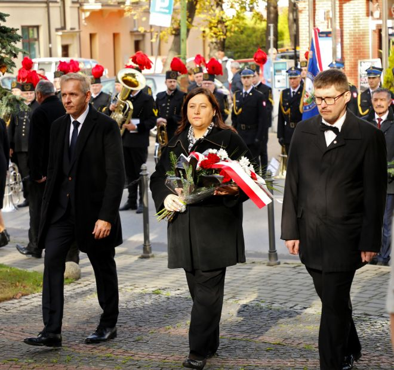
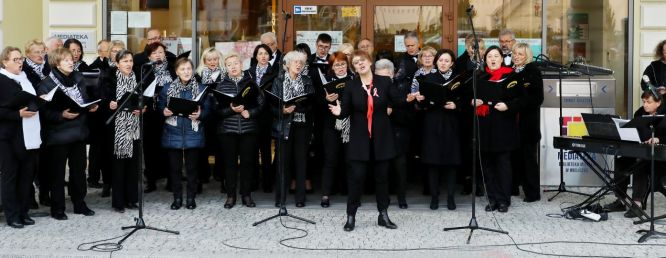
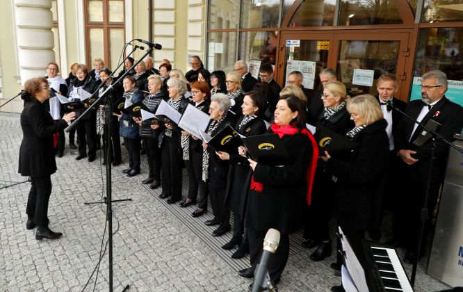
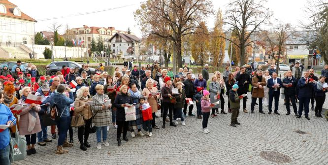
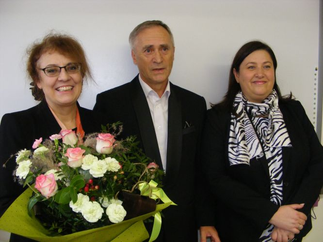

A tymczasem w Cameracie...
.
2022-11-11
11 listopada zaczynamy od złożenie kwiatów pod Pomnikiem Odrodzenia Polski. Delegacja Stowarzyszenia Muzycznego - Chór Camerata: Prezes Magdalena Thomas oraz Jan Thomas i Sebastian Szpil, w dniu Święta Niepodległości złożyła wiązankę kwiatów pod Pomnikiem Odrodzenia Polski.
Godzina 15.00 - śpiewanie pieśni patriotycznych.
W ramach obchodów 104. Rocznicy Odzyskania Niepodległości wielicki chór Camerata pod dyr. Izabeli Szoty, przy akompaniamencie Agnieszki Korczyńskiej, przewodził wspólnemu śpiewaniu pieśni patriotycznych.
 
Plac przez Wielicką Mediateką wypełnili mieszkańcy Wieliczki na czele z Burmistrzem Arturem Koziołem oraz przedstawicielami władz samorządowych.

11 listopada to także data szczególna dla Pani Izabeli Szoty, która w tym dniu świętowała swoje 60-te urodziny. Camerata z tej okazji przygotowała niespodziankę.

Tekst Barbara Borowiec i Izabela Szota

© Stowarzyszenie Muzyczne Chór Camerata Wieliczka
Prowadzenie strony oraz zdjęcia: Małgorzata Wysocka